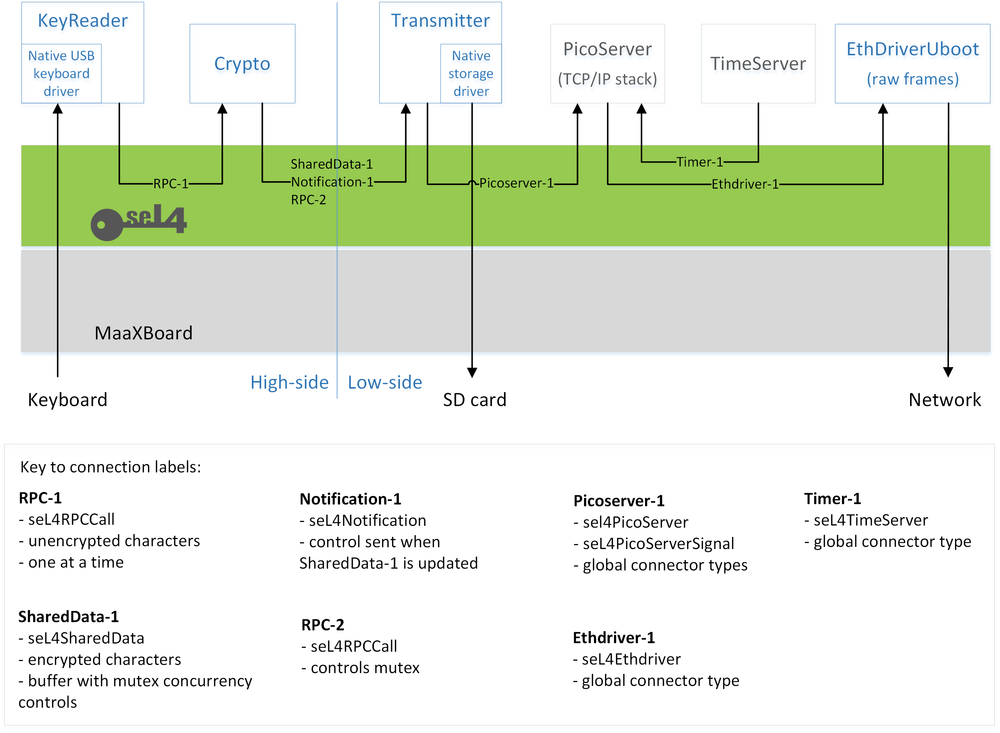

Architecture
We defer to the seL4 Foundation's documentation of CAmkES as the primary source of understanding of CAmkES, but this section will cover aspects of the use of CAmkES where appropriate.
Basic Description
An operator types a plaintext message using a USB-connected keyboard. The application encrypts the message and transmits the resulting ciphertext via Ethernet to a client that has connected to a predetermined port. The application also records the ciphertext messages in a logfile on the SD card of the device.
Architecture Overview
The architecture of the demonstrator is shown below.

Blue blocks show CAmkES components created specifically for the security demonstrator (or previously created within the developer kit in the case of EthDriverUboot); grey blocks show CAmkES global components.
Arrow directions show an abstracted view of data flow. Arrow labels refer to seL4 connector types (some concerned with data flow, some with control flow), which are elaborated in the key. More details about seL4 connector types may be found in the CAmkES manual, but the fundamental types are RPC (Remote Procedure Call), SharedData, and Notification (see examples such as seL4RPCCall in the key).
As the KeyReader and Crypto components handle plaintext and cryptographic data (e.g. keys), they are considered as 'high-side' in terms of security and must be kept separate from the downstream 'low-side' components that handle ciphertext. It is not the role of this developer kit to re-justify the credentials of seL4 (the seL4 whitepaper is a good starting point), but suffice to say that seL4's capability-based access controls guarantee protection and separation between all components, regardless of the notional high and low sides that we have overlaid, only allowing interactions between components where explicitly established via the seL4 connector types.
The following paragraphs briefly describe the data flow, from left to right, highlighting the different seL4 mechanisms used for inter-component communications.
Components and Connector Types
Plaintext characters are typed on a keyboard and read by the KeyReader component. These characters are then 'encrypted' by the Crypto component to transform them into ciphertext. RPC is an appropriate connector type for the character-by-character data flow between KeyReader and Crypto (labelled as RPC-1 on the diagram), employing seL4RPCCall. Since this application is more concerned with demonstrating seL4 concepts than crypto-algorithms, the Enigma machine's rotors and plugboard are replaced with a simple ROT13 algorithm!
The encrypted characters are transferred to the Transmitter component via a shared circular buffer, where Crypto writes to the head of the buffer and Transmitter reads from its tail. The buffer is implemented as a SharedData connection (labelled as SharedData-1 on the diagram) using seL4SharedData. (Note that within CAmkES, shared memory is abstracted as a Dataport, so this terminology is often seen associated with this connection type.)
If the buffer is full, Crypto discards characters; otherwise, each time Crypto writes a character to the buffer, it sends a Notification to Transmitter (labelled as Notification-1 on the diagram) to signify that there is data to read, using seL4Notification. Transmitter acts upon notifications by reading all available characters until the buffer is empty.
The shared buffer is protected from concurrent access by use of a mutex. The mutex is owned by Crypto, and Transmitter accesses its lock and unlock operations via an RPC connection (labelled as RPC-2); note that this is a control flow and is in the opposite direction to the arrow, which shows the data flow of encrypted characters.
The Transmitter component interfaces to PicoServer via three connections, as shown in the picoserver_uboot test application diagram: send, receive, and control. The send and receive connections are defined as global connector type seL4PicoServer, which is fundamentally seL4RPCDataport (SharedData combined with RPC). The control connection has a global connector type of seL4PicoServerSignal, which is fundamentally seL4RPCCallSignal (RPC combined with Notification). Note that although the interface between Transmitter and PicoServer configures receive in order to satisfy the CAmkES connections, the application does not process any Ethernet traffic in this direction, and only send is used.
The interface between PicoServer and EthDriverUboot uses the seL4Ethdriver global connector type, which is fundamentally another instance of seL4RPCDataport (SharedData combined with RPC).
TimeServer, which supports timing functionality for PicoServer, uses the seL4TimeServer global connector type, which is fundamentally another instance of seL4RPCCallSignal (RPC combined with Notification).
Device Drivers
As can be seen from the architecture diagram, three hardware devices are involved in the operation of the application.
-
The KeyReader component requires access to the USB device to allow for plaintext characters to be input from a USB keyboard.
-
The Transmitter component requires access to the SD/MMC device to allow for the ciphertext message to be output to a log file.
-
The EthDriverUboot component requires access to the Ethernet device to allow for ciphertext message to be output to the network.
Device drivers for the required hardware access are supplied by the U-Boot Driver Library previously introduced by this development kit.
Three separate instances of the library are used by the application, one per component with a need for hardware device access. The capabilities of each component, and their associated library instances, are configured such that each component is only capable of accessing the minimum set of hardware devices required to perform the desired function.
For example, the Transmitter component only has a need to access the SD/MMC device to write the ciphertext log file. As such, the capabilities of the Transmitter component permit it to access the memory-mapped interface of the SD/MMC device; however no such capabilities are provided for the USB or Ethernet devices. Any attempt by the Transmitter component to access the memory-mapped interface of the USB device (e.g. in an attempt to read the plaintext keypresses) would therefore be prevented by seL4.